We have already seen how a input-output box diagram sits at the
heart of linear models. Our primary interest lies in learning
about how the inputs influence the output. Usually we start with
an easier question: which inputs have any influence on the
output? It's a binary quetion, requiring yes/no answer. We can
eliminate all the inputs that do not influence the output, and
then focus on exploring the roles of the other inputs. ANOVA is
our main weapon to answer this binary question.
Suppose you enter a room where there is a light bulb that is
on. Also there are 4 switches as shown. Just by looking at
the switches, try to answer this question: Which switch
controls the light?
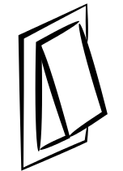
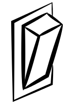
Now play with the switches (click to toggle). What is the answer
to the same question now?
The important lesson to learn from this example is that it is
less important to relate values of the inputs to the value of the
output. You should relate change in the inputs with the change in
the output. So before you say that the high value of ouput is
associated with a high value of a input, you should lower the
input's value and see if the ouput also comes down. This is the
crucial idea behind ANOVA: explaining the variation of the
output in terms of variations of the inputs. Here is another
example.
EXAMPLE:
I once heard it mentioned that girls have worse 3D perception
that boys. Many teachers who have worked with both boys and girls
support this view. But is it because of hormnal diference? Or is
it because of how the society nurtures children of the two
genders. Boys are usually given building blocks and mechnics sets
to play with, while girls are supposed to play with soft toys and
miniature kitchen stuffs. It is quite likely that this difference
eventually influence the 3D perception. In terms of box diagram
we may visualise this as:
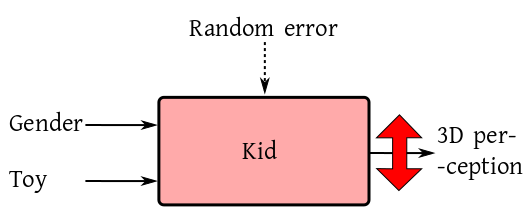
The big double-headed red arrow means that we do observe a lot of
variation in 3D perception of kids. We want to link this with the
variation of of the inputs. Here is one possibility:
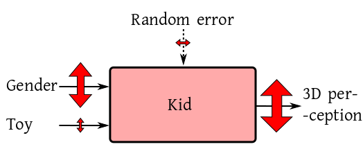
Here the main role is played by the gender difference. Choice of
toys or random errors take a back stage. This is basically what
goes in the mind of people who make remarks like
"Oh, girls will never be as smart as boys,
howsoever you try".
But those who thinks nurture is the root cause have the following
diagram in mind:
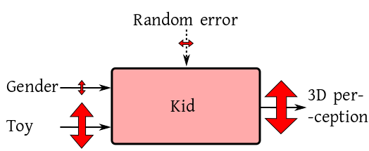
Notice that in each case part of the variation comes from random
error. This source could play the main role, as in the following
diagram:
By the way, you should not think that only one input must
dominate all the time. Multiple inputs may be significant
simulataneously.
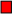
From the above example we may get the idea that the output
variation is "split up" nicely into parts that are each ascribed
to one input. Thus, we may expect to have a table like the one
shown below:
Source
Variation
Gender
$S_1$
Toy
$S_2$
Random
$S_3$
Output
$S_1+S_2+S_3$
Here $S_i$'s are suitable measures of variation for the
different arrows in and out of the box. Such a table is called an
ANOVA table (a typical ANOVA table also has some additional
columns as we shall see soon).
This ANOVA table has one row for each arrow. This may not always be the case, though. Let us
aain illustrate with a light bulb example.
EXAMPLE:
You enter a room with two switches and a lamp as shown. Play with
the switches to figure out how they control the lamp.
Here the lamp turns on only when both the switches are on. If any
one of the switches is off, then the other has no effect. Thus,
here the importance of each switch depends on the state of the
other switch. We have already seen this kind of
situation: interaction.
We have already seen the following agricultural example.
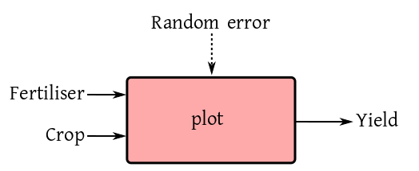
To allow for possible interaction between crop
and fertiliser, our ANOVA table should now have one extra
row:
Source
Variation
Crop
$S_1$
Fertiliser
$S_2$
Crop$\times$Fertiliser
$S_3$
Random
$S_4$
Output
$S_1+S_2+S_3+S_4$
If $S_3$ is pretty large, then we shall suspect the presence
of interaction.
Let's take two examples to explore this important question.
EXAMPLE:
A student got 31% marks in her +2 level math exam. She was not happy with
it. She went to a private coaching centre, and after a year of
study there appeared in the same exam once again. This time she
scored 33%. Do you think that the coaching centre helped?
SOLUTION:Not really. An increase from 31% to 33% is only very
slight increase, could very well be due to chance.
Contrast this example with the next one.
EXAMPLE:
The daughter of one of our staff is a state-level competitive
swimmer. A student of only class VII, she takes 33 sec to finish
her 50 metre butterfly. Her father wishes she could do it in 31
sec, because only then she has chance to comete at the national
level. Now suppose a swimming coach really trains her to achieve
that level. Would you consider that as a significant
contribution?
SOLUTION:Sure! Reducing 2 sec in 50 metre is no joke!
It calls for serious improvement in swimming, and not effected by
mere random variations.
In both the examples we compared the numbers 31 and 33. Yet in
one case the diffeence was considred insignificant, while in the
other it was significant. This was because we used the variation
due to randomness as a yard stick. If the variation associated
wit an input is significantly larger than that for the random
error, only then does the contribution of the input count.
For example, in the following diagram input 1 is significant:
So far our discussion has been pretty informal. Now we shall try
to mathematise the ideas. We shall start with the 1-way ANOVA
model.
EXAMPLE:
We are trying to see the effect of three different fertilisers
(None, Compost and NPK) on the
yield of paddy. So fertiliser is the only input (except random
error) and the box diagram looks like this:
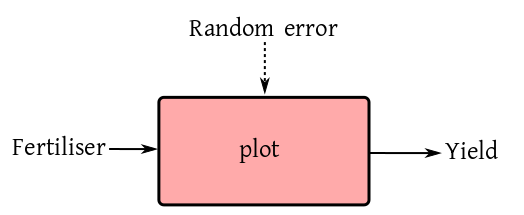
We take 15 identical plots, and randomly assign each fertiliser
to 5 plots. Here is the outcome shown in a number line:
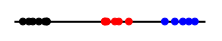
Do you think that the fertiliser effect is significant? What if
the outcomes were like this?
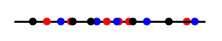
SOLUTION:
I hope you agree that the fertiliser effect is significant in the
first case, and insignificant in the second case. Indeed, you can
roughly denote your finding diagrammatically as follows.
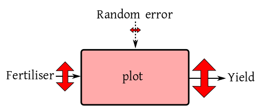
and
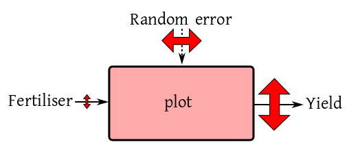
We shall now try to arrive at these mathematically.
We start with the output variability. If we call the yield of
the $j$-th plot under the $i$-th fertiliser by the
name $y_{ij}$ (for $i=1,2,3$ and $j=1,...,5$),
then the output variability may be measured by
$$
\sum_i\sum_j (y_{ij}-\b y_{..})^2.
$$
The error variability is best measured by looking it how much
dots of the same colour differ from each other. These are given
by (for $i=1,2,3$)
$$
\sum_j (y_{ij}-\b y_{i.})^2.
$$
So the total variability due to random error is
$$
\sum_i \sum_j (y_{ij}-\b y_{i.})^2.
$$
If we want to measure the variability due to fertiliser,
then we should first find the average of dots of each colour, and
pretend that all the dots of that colour are actually at that
average, and
then see how much the points differ from each other:
$$
\sum_j 5(\b y_{i.}-\b y_{..})^2.
$$
The 5 is because there are 5 dots of each colour.
And indeed we have the algebraic identity:
$$
\sum_i\sum_j (y_{ij}-\b y_{..})^2 =
\sum_i \sum_j (y_{ij}-\b y_{i.})^2 + \sum_j 5(\b y_{i.}-\b y_{..})^2.
$$
In fact, here all the group size were 5. If the $i$-th group
size were $n_i$ (for $i=1,2,3$), even then we have
$$
\sum_i\sum_j (y_{ij}-\b y_{..})^2 =
\sum_i \sum_j (y_{ij}-\b y_{i.})^2 + \sum_j n_i(\b y_{i.}-\b y_{..})^2.
$$
So we now have a mathematical form of our ANOVA table:
Source
SS
Fertiliser
$\sum_j n_i(\b y_{i.}-\b y_{..})^2$
Random
$\sum_i \sum_j (y_{ij}-\b y_{i.})^2$
Total
$\sum_i\sum_j (y_{ij}-\b y_{..})^2$
As we had mentioned earlier, we use the $RSS$ as our yard
stick. So we are going to measure the $SS$
for fertiliser in units of $RSS.$ In other words, we
shall check if the following ratio is "too large":
$$
\frac{\sum_j n_i(\b y_{i.}-\b y_{..})^2.}{\sum_i \sum_j (y_{ij}-\b y_{i.})^2 }.
$$
You have probably guessed that this looks suspiciously like
an $F$-statistic (only if we divide by suitable degrees of
freedom). Indeed, these detais constitute the other columns of a
traditional ANOVA table:
Source
d.f.
SS
$MS$
$F$
Fertiliser
2
$\sum_j n_i(\b y_{i.}-\b y_{..})^2$
$SS_{fert}/df_{fert}$
$MS_{fert}/MS_{err}$
Random
12
$\sum_i \sum_j (y_{ij}-\b y_{i.})^2$
$SS_{err}/df_{err}$
Total
14
$\sum_i\sum_j (y_{ij}-\b y_{..})^2$
The d.f. column is mysterious, but the others are not. The
d.f. column requires some linear algbra to explain, which we
shall do now.
Comments
To post an anonymous comment, click on the "Name" field. This
will bring up an option saying "I'd rather post as a guest."